Так, давайте я сразу кое-что отмечу. Лучшими упражнениями лично для вас будут те, которые вы будете делать регулярно, будете в них прогрессировать, и не забросите. Аспект "нравится или нет" играет ключевую роль.
А в статье мы рассмотрим 6 лучших упражнений, которых будет достаточно для гармоничного развития всего тела. Просто потому, что они эффективны, и работают над большинством мышц нашего организма.
Список лучших упражнений не мог обойтись без них. Приседания - лучшее упражнение для развития нижней части тела (с нюансами, но все же).
Есть несколько разновидностей приседаний, такие как плие-приседы, приседы с узкой\широкой постановкой ног, приседания со штангой на плечах, с гантелями перед собой, со штангой на груди...
Все они нацелены на нижнюю часть тела. Будут лишь небольшие различия в активности ягодичных, внутренней поверхности бедер, или других мышц ног. Но в целом, они очень схожи в своей нагрузке.
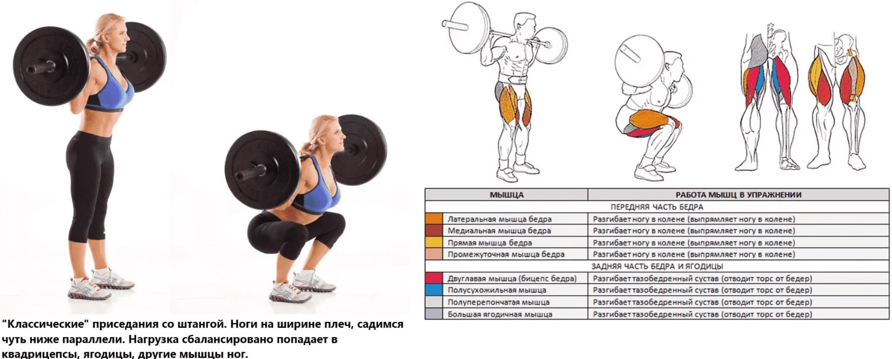Помимо этого, приседания неплохо нагружают разгибатели позвоночника (в частности, мышцу, выпрямляющую позвоночник), мышцы кора, такие как пресс, косые мышцы живота.
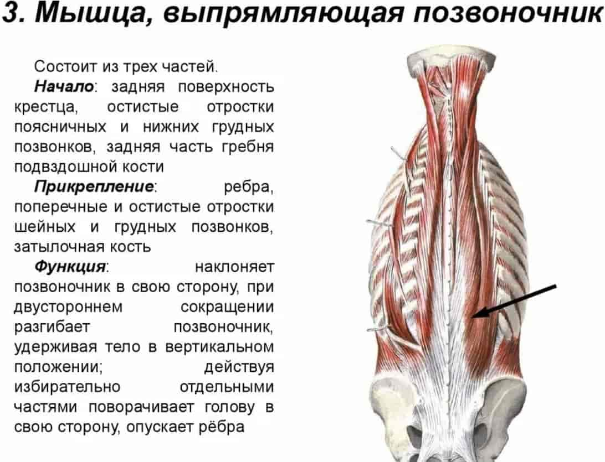Да, куда без него. Это упражнение нагружает сразу три крупных мышечные группы - дельтовидные (плечи в простонародье), трицепс (задняя поверхность рук под плечами), грудные мышцы.
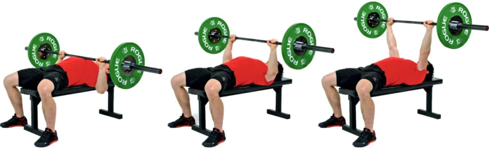Не обязательно речь только о жиме штанги, вполне можно жать и гантели, и варьировать углы скамьи, чтобы вам было комфортнее его выполнять.
Нередко люди сталкиваются с болью в плечах, выполняя жим лежа. В таком случае я советую переходить на гантели, подбирать угол скамьи и возможно, супинировать хват. Например вот так:
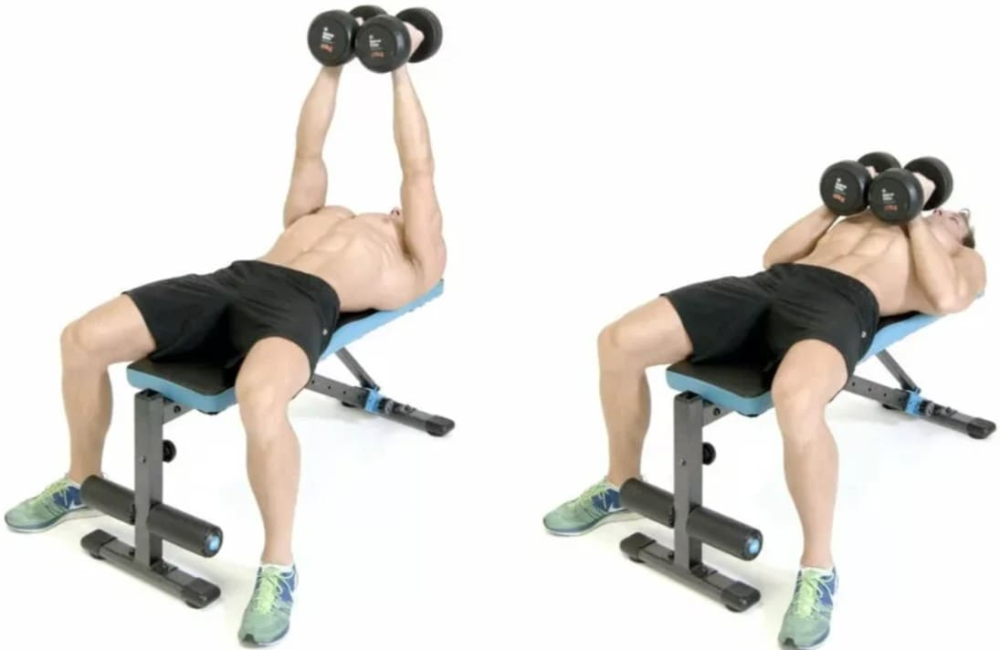Не обязательно сжимать вместе гантели.
Помимо прочего, жим лежа так же нагружает мышцы кора (хоть и в намного меньшей степени, относительно приседаний).
Становая тяга отлично работает над задней поверхностью бедра, и мышцами спины. Особенно с трапецией и разгибателями позвоночника ( с упомянутой выше мышцей, выпрямляющей позвоночник, например).
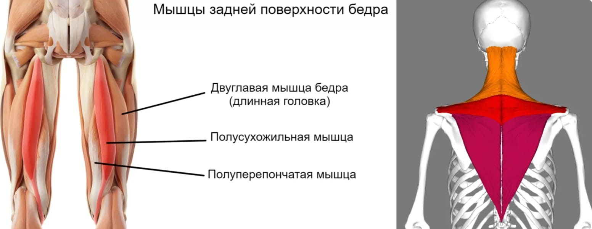Как бы не были хороши приседания, они плохо развивают заднюю поверхность бедер. И становая тяга прекрасно покрывает этот недостаток. Становую можно выполнять как со штангой, так и с гантелями.
В дополнение, становой тяге нет равных в развитии средней области трапеции. А значит, она поможет улучшить вашу осанку. Не стоит так же забывать о задней части дельтовидных. Более того, становая тяга в разумных кол-вах и с адекватным весом, заставит вас забыть о болях в пояснице.
Есть несколько разновидностей становой тяги, и так же как и в приседах, разница в рабочих мышцах там не кардинальная. Например, тяга "сумо", "румынская тяга". В тяге сумо нагрузка на поясницу меньше. Если это ваша проблемная зона, вероятно тяга "сумо" вам подойдет больше классической становой.
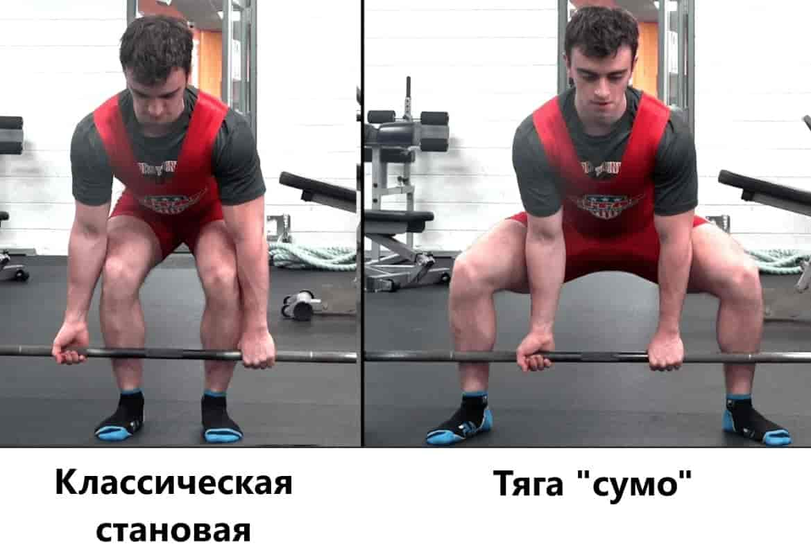Румынская же тяга, делает акцент на развитии задней поверхности бедра. И опять, становая прекрасно развивает мышцы кора. Все упражнения из списка помогут вам забыть о тренировке пресса, потому что в этом не будет необходимости.
Это четвертое упражнение из списка. Упражнение непревзойденно развивает самую крупную мышцу нашего тела. Ягодичные мышцы.
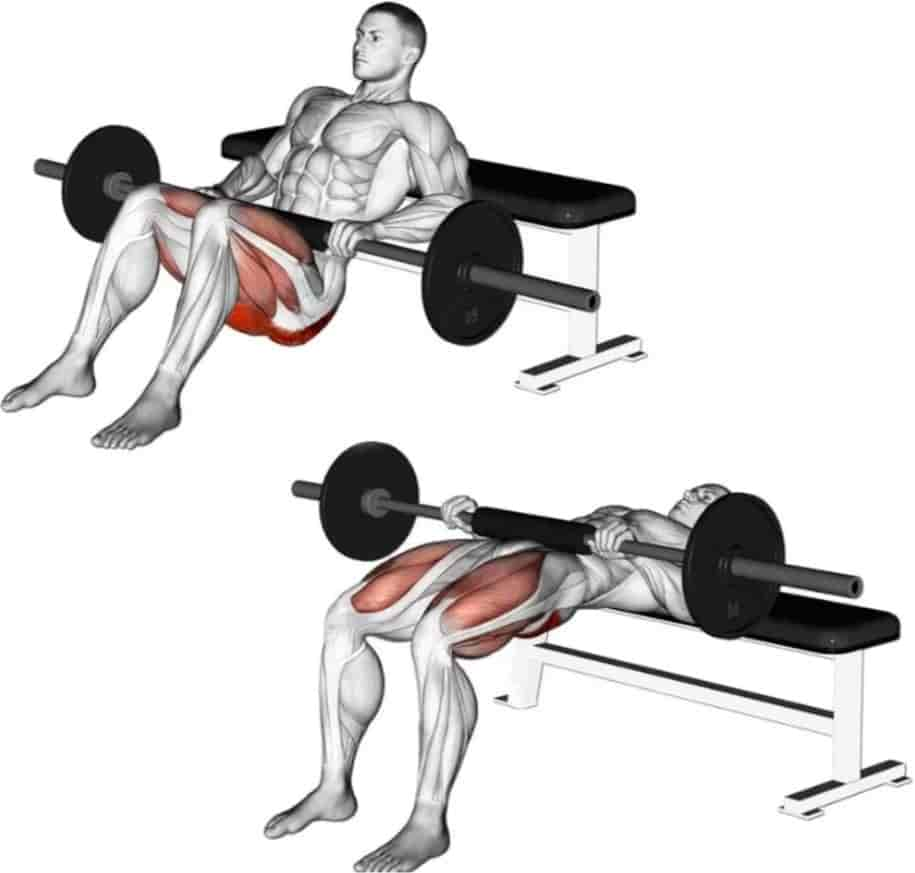Часто его выполняют только девушки, хотя я бы рекомендовал его всем. Развитые ягодичные-это не только красиво, это еще и очень функционально. Они помогают нам бегать, взбираться на препятствия (поребрики, лестницы, коряги в парке/лесу).
Помимо ягодичных, это упражнение хорошо развивает заднюю поверхность бедра, и неплохо развивает переднюю поверхность бедер. И опять работают мышцы кора.
Можно выполнять ягодичный мост не только со штангой, но и даже дома, одной ногой, например так:
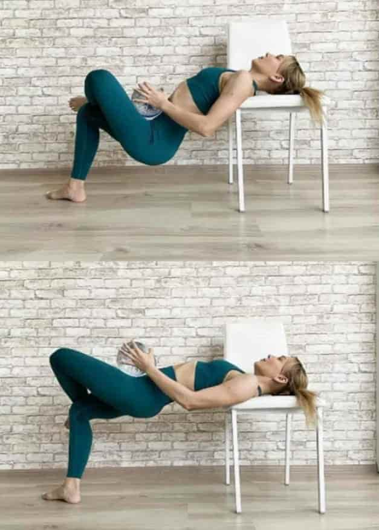Есть еще одна вариация ягодичного моста, когда его выполняют с пола. В таком случае нагрузка на ягодичные уменьшается, но возрастает нагрузка на заднюю поверхность бедер:
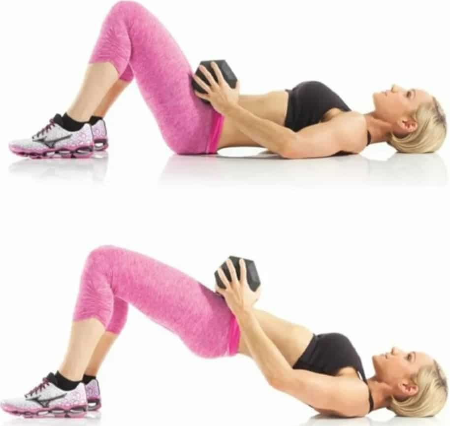Вероятно, это одно из лучших упражнений для мышц спины. Обычные подтягивания. Пятое упражнение из списка.
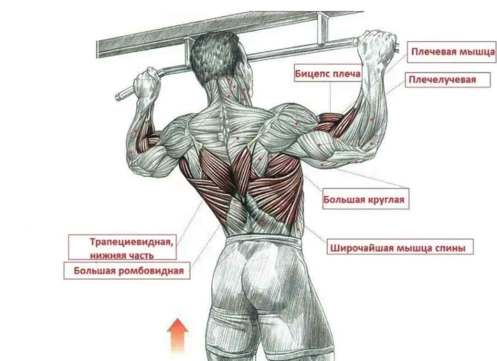Подтягиваниями мы закроем пробел в нехватке нагрузки для широчайших мышцы спины, нижней области трапеции, которая может быть при выполнении становой тяги.
И снова активно включаются мышцы кора, и так же задняя часть дельтовидных. Не знаю, почему этого не отмечают на картинках.
Это упражнение покроет нехватку нагрузки на дельтовидные в списке этих упражнений.
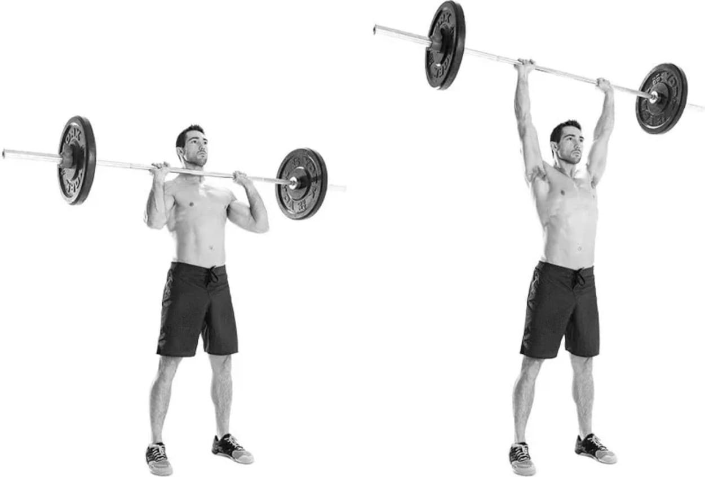Да, жим лежа конечно хорошо нагружает дельтовидные, но в основном только переднюю их часть. Именно здесь нам на помощь приходит армейский жим.
Он хорошо нагружает все пучки дельтовидных (кроме задних, однако об этом позаботится становая и подтягивания). Помимо этого, нагрузку получают трицепсы, верхняя область грудных. И да, опять работают и мышцы кора.
Подобный жим можно выполнять не только стоя, но и сидя, и даже с гантелями. По сути, разница будет минимальна. Основные тренируемые мышцы - дельтовидные (плечи), верхняя область грудных, трицепсы.
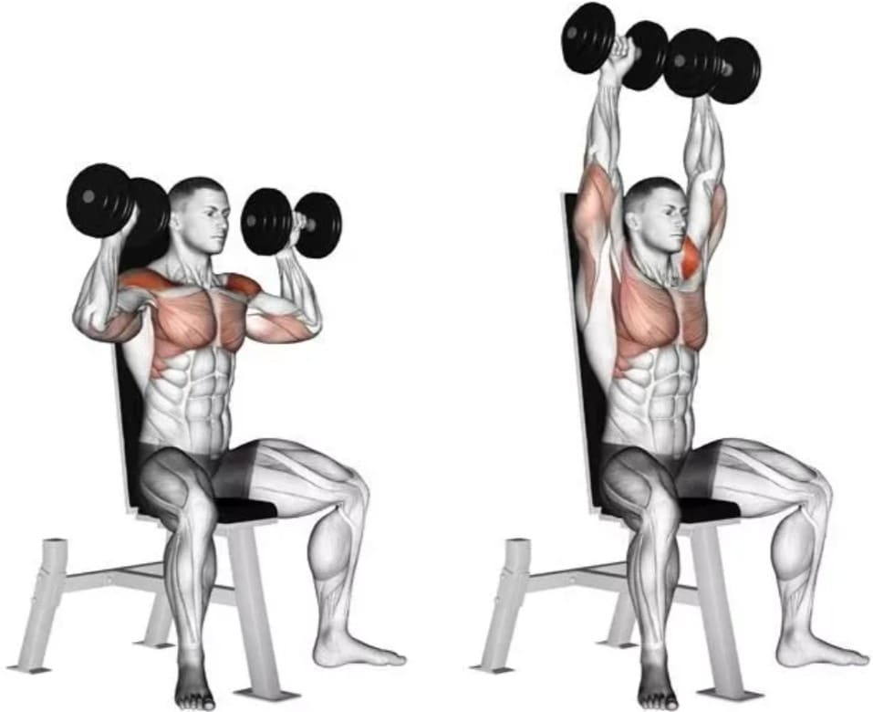Но если мы сидим на скамье со спинкой, нагрузка на мышцы кора почти пропадает. Это не всегда минус, часто это помогает лучше поработать с основными рабочими мышцами, так как мы можем осилить больший вес.